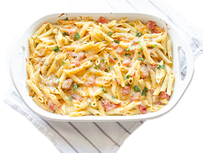

Testenine sa sirom

Sastojci
- kesa testenine po izboru
- topljeni puter
- pola solje brasna
- 4 solje mleka
- 6 solja narendanog cedara
Priprema
- Stavite testeninu u posoljenu vodu da se kuva. Dok se kuva, istopite pola šolje putera na srednjoj vatri.
- Poprskajte sa pola šolje brašna i mešajte 2-3 minuta da se kuva.
- Lagano sipajte 4 šolje punomasnog mleka i mešajte dok ne dobijete ujednačenu smesu.
- Nastavite da mešate dok sos ne počne lagano da vri i tada će se značajno zgusnuti.Na kraju dodati sir.
Izvor: Dijeta plus zdravlje